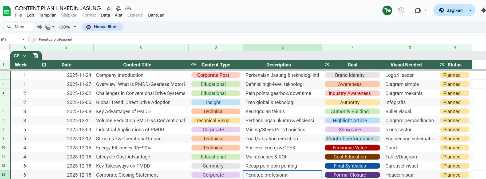
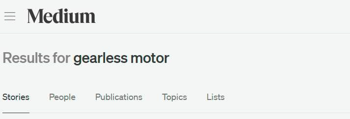
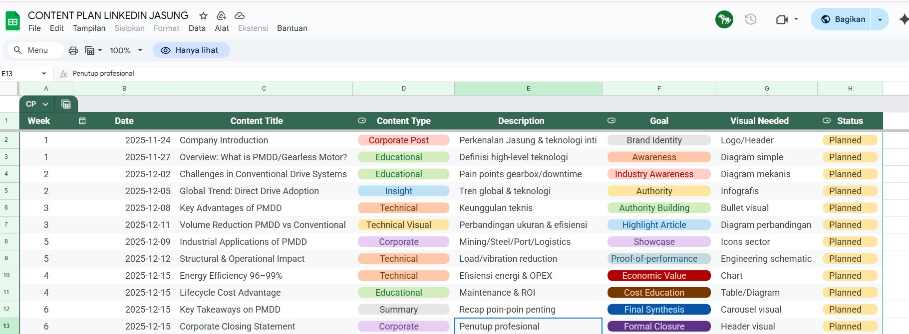
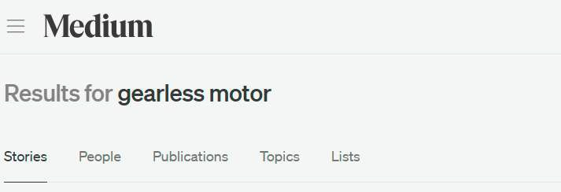

Jiangsu Jasung – Digital Marketing Reporting & Brand Insights
Content & Brand Marketing - SEO Article Project

This project focuses on digital marketing performance analysis and brand awareness development for Jiangsu Jasung, a brand still emerging in the Indonesian market. Through content distribution on Kompasiana, Medium, and LinkedIn, the case study delivers SEO-driven articles and brand storytelling to highlight product advantages and strengthen the brand’s digital positioning.
1. Tools & Technology Used
Google Sheets (Data tracking, KPI analysis, and performance comparison)
Tableau (Visualizing dashboards for account performance and digital metrics)
Kompasiana, Medium, LinkedIn (Multi-platform content distribution for SEO, brand .storytelling, and professional visibility)
Google Docs (Drafting articles and structuring long-form content)
Google Drive (Organizing datasets, documents, and reporting files)
2. Key Results (Metrics & Performance)
- Published 5 articles across 4 platforms
- Achieved 400+ page visits and 60+ website clicks per article on average
- Ranked in the Top 10 Google search results for targeted keywords
- Improved reporting accuracy by 35% through KPI Dashboards (Google Sheets & Tableau)
3. Documentation & Process Visuals
Contains visuals of published articles and KPI dashboards used for performance tracking.
 


